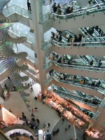
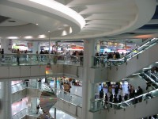
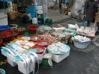
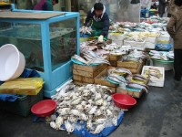
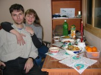

| Магазины и покупки |
|
| Корейская торговля |
|
Море магазинов. Тысячи. Я вот сегодня ходила кастрюльку покупать. :) Оказалось, что они-то тут дороже сковородок. Меньше 12000W ничего не попадалось. А потом я зашла в один магазин, куда мы частенько заходим, но ничего не покупаем. :) И там была всего за 6500! Самая что ни на есть простенькая, чтобы не жалко потом было. И пока я раздумывала, заметила на соседнем стеллаже точно такую же, ничем-ничем не отличающуюся, за 6000. :) Или вот так: рабочий день, а продавца почему-то на месте нет (улица довольно безлюдная, у нас бы это считалось "мрачным переулком"), товар весь разложен. Хорошо, если продавец где-нибудь в глубине спит, можно и разбудить. А вот мы так потолклись однажды минут пять (обычно стОит более чем на полминуты задержаться около товаров - продавец начинает активную рекламную деятельность), никто не появился. То есть это означает, что продавец нигде не затаился и не видит, что тут происходит. :) То же самое и с парой соседних лавочек, имеющихся на этой улочке (ну неоживлённое место, нету тут магазинов). :-О Посмотрев на часы, мы предположили, что все ушли на обед. :) Товары разложены просто так, забрать можно абсолютно всё, что угодно. :-О Вот такая загадочная корейская торговля. :) |
| Реклама |
|
...на телевидении не столь навязчивая, как у нас. А вообще наткнуться на рекламу сложно и быстро она заканчивается. Кстати, не всегда понятно, что же они рекламировали. :) Исключение составляет "телемагазин" - вот этого добра полно. Вчера смотрели фильм с Джеки Чаном (на английском, с корейским переводом, подписанным внизу), специльно обратила внимание на рекламу: показывают примерно через 30 минут (ну чтобы на половине фразы-то не обрывать, могут и подождать немного) и ровно по два рекламных ролика. :) Есть такая же, как в России. Например, бритвы "Филипс", когда типа врач оглядывает мужика, а потом его бреет - минут пять назад показали. Есть такие же как у нас, но с кореянками, например, видела про крем Дав точно такой же с европейской девушкой. Смешно. :) Есть бегущая строка на некоторых каналах - только что видели... да и сейчас созерцаем. На улицах рекламой всё завешано, каждый свободный кусочек пространства. Если не входит на стены домов, то вешают на окна. Так может быть закрыто до 100% поверхности окон. |
| Странности телемагазина |
|
Что-то типа шортов или трусов таких, не совсем понятно, девушки тоже их носят, видимо... стОят - немногим больше тысячи рублей. Куртки детско- подростковые, типа пуховиков, длиной почти до колена, стОят столько же. :) Люди, рекламирующие одежду, стоЯт почти неподвижно, как манекены. Да оно и к лучшему, если они двигаются, то это уж совсем весело. Например: реклама брюк. Что-то там долго говорят, видимо "ах, какие брюки, ах, какие хорошие, а какая ткань! А кармашки-то какие!!!" И так минут десять. Потом четыре корейца в этих брюках (разных цветов) стоят. Сначала неподвижно, потом помаленьку начинают двигаться: один поглаживает свою ногу ("ах, какие у меня чудесные брюки!"), гордо поглядывая на соседа. Сосед соглашается, поглаживая его ногу ("и правда, очень, очень хорошие"). Или все присядут одинаково, бочком, одну ногу выставят и гордо её поглаживают. Смотрится очень весело. :) |
| Техномарт |
|
Это магазин такой. Снаружи я его не оценила, потому как попали мы в него из метро, не выходя на поверхность.  Что из себя представляет изнутри? Ну представьте торговый центр, разверните мысленно все его этажи, переходы, кафе и прочие площади в одну плоскость... Представили? Ну вот всего этого на один этаж Техномарта не хватило. :) А таких этажей - десять штук над землёй и один под. При этом на одно торговое место никто не выделит такую огромную площадь, как в торговом. Поэтому всего МНОГО. Очень. Сколько эскалаторов - не знаю. В центре здания - по четыре на этаж: два вверх, два вниз. Но мы, вроде, ещё где-то поднимались в другом месте. Ну и лифты, конечно же, есть. Тоже не знаю сколько, мы ими не пользовались.  Из самого прикольного, что я видела: рулончик клавиатуры :), то есть в трубочку она скатывается, размер - обычный, можно мочить, так как герметичная, жалко только, что корейская... и шахматы, где фигуры - из звёздных войн. :) Например, за "белых" ладьи - "ушастики" (как они там называются? Я не помню), а за "чёрных" - роботы, которые в шар сворачивались (Глеб подсказывает, что "дройдеки"). Ну и так далее. Короче, нужно по фильму знать, кто за кого был. :)) |
| Покупки |
|
Внезапно во время прогулки вышли на супермаркет, который видели на карте, но не поняли, где это и что это. Очень большой, можно всё купить, цены вполне средние. Купили мы себе на новый год 1.5 литра "алоевого" сока с мякотью :) (на вкус очень напоминает киви! Без красителей, прозрачный, только мякоть плавает... без колючек, без колючек, не надо фантазировать, а бутылка зелёная), литр любимого апельсинового, мороженое корейское, мандарины, молоко с какао и ещё чем-то, не помню, очень вкусное, но очень уж маленькие упаковочки. Запаслись мукой, сахаром, картошкой, луком репчатым (я писала про него), "сливками для кофе", капусты кусочек купили. Там удобно, есть белокочанная капуста, нарубленная на половинки и четвертинки и упарованная в плёнку: берёшь такой кусочек, какой нужен, сразу подписана цена, к тому же. Но можно и целыми кочанами купить. Так же и лук: можно сеточку (разные по объёму нафасованы) купить, а можно пакетик с уже почищенным и помытым. :) И чеснок тоже чищенный продаётся. Короче, закупились - еле принесли. :) Ой, совсем забыла. Решила купить помидоры для капусты, а то страшно пасту томатную брать - вдруг сладкая окажется? А фрукты, овощи и прочая зелень/салаты у них так продаётся: стоят рулончики пакетов, отрываешь один (есть побольше объёмом, есть поменьше), складываешь понравившееся тебе и отдаёшь корейцу у ближайших весов. Он взвешивает и клеит на пакет бумажку со штрих-кодом, весом и суммой (весы только что отпечатали). :) И вот я нагрузила помидор для капусты и на салат, а весов не вижу рядом, только те, что у морковки и прочих корнеплодов ==:-( ), хорошо, подходящий кореец чуть ли сам меня не поймал - весы-то сзади оказались. :) Помидоры есть большие, а есть мелкие, как в самолёте. :-Р И мандарины тоже. Я посмотрела: они размером с хороший апельсин. Глебу говорю: "Нам же четырёх хватит?", а Глеб увидел не эти, про которые я говорю, а такие же, как у нас продают, маленькие, которые я, в свою очередь, не заметила! И отвечает: "Нет, нужно штук восемь брать". :) И оба, наверное, в раздумьях: я - о Глебовой неумеренной любви к мандаринам (как будто нельзя второй раз сходить!), а он - о моей жадности. :) В результате взяли четыре больших и едим их теперь по половине - слишком уж много одного за раз на человека получается. :) А цена, кстати, у них одинаковая - 27 рублей. Вещи на входе сдавать не нужно, сумки никто не проверяет. Мы заходили со своей картошкой, которая тут тоже продаётся и лежит просто так, чтобы сами набирали. И никто ничего не сказал. Картошку, кстати, мы покупали на улице. По нашим меркам довольно дорого, но по местным - дёшево. Мы заплатили 2000 вон за ~3 кг, весов у нас нет, только на глаз можем судить. 1000 вон - примерно 27 рублей. Проезд на метро 600 вон (по карточке дешевле - 550). Час интернета - 1000W, еда в ресторане по-разному, мы что-то ели за 2000W, что-то и за 3000W, но, кажется, дороже 5000W ничего не брали, хотя есть и за 25000W, мы же ограничены нашими вкусовыми предпочтениями, да и "дороже" не значит - "вкуснее". Ну вот сковородку мы купили за 5000W, коврики для сидения на полу ~3000W и выше, кажется, но они очень сильно отличаются по качеству, сравнивать практически невозможно. Вчера видели коврик по Гарри Поттеру! :))) Стоил, правда, дорого, кажется 15000W. Для сравнения, утюги видели от 21000W. Столик корейский маленький от 15000W "двухместного размера". :) Вот так примерно всё обстоит.  А потом мы пошли за рыбой. Уже довольно поздно, долго не выбирали. К тому же страшно взять что-то несъедобное, некоторая такого жуткого вида лежит, какая-то горбатая, шипастая, с выпученными глазами... Или тонкая, как средняя селёдка и длинной почти полтора метра. Как я тут должна выбирать?! Взяли кого-то с более-менее красивым "телосложением" и не очень страшного. Оказался - ужасно дорогой - 12000W. :( Глеб не спросил цену, а потом уже поздно отказываться было. :) Хотя, с другой стороны, его на два ужина и уху вполне достаточно. Точнее - её. Там икры два мешка, я на ладонь положила - только кончики пальцев выглядывали. %) Ну это ладно, а теперь - почему отказаться нельзя было. Потому что вид у неё был уже не товарный! :)  Выбрали мы рыбину, кореец её схватил и побежал в глубь магазинчика, к столу. Там, пока мы и моргнуть не успели, она была помыта, отрублены все лишние плавники, лишний хвост, голова (из которой удалили жабры, разрубили на две части и тоже нам упаковали), сама рыба выпотрошена (печень и икру нам упаковали) и разрублена на порционные куски (я только успела что-то Глебу жалобно сказать про "как я это жарить потом буду" и "лишь бы не мелко", а то мы видели процесс разделки курицы таким образом... там было ОЧЕНЬ мелко :)). Потом всё ещё раз помыли, сложили в пакеты (в два, чтобы не пахло и не испачкались) и нам выдали. %)  Короче, кроме цены всё было очень даже прикольно. Я всё думала, что с ней делать, в конце концов просто в яйце обмазала на всякий случай, в муке обваляла и поджарила. На вкус получилось что-то сочное, мягкое, напоминает минтая немного. Нежирная. Глеб два кусочка съел и икру почти всю - видимо, понравилось. И костей почти не было. Вот так мы пробовали рыбу. :) Кстати, у многих ресторанчиков что-то плавает в аквариумах. Всевозможная рыба - это уже не интересно. :) Есть крабы, кальмары и осьминоги. На улицах тоже частенько живое продают. Однажды видели что-то ужасно отвратительное, типа гигантских червей: в диаметре сантиметров пять, длина неизвестна, потому как они там толпой с воде копошились, но довольно длинные, все как-то перекатываются, сокращаются, ползают, короче - кишат. Бееээээ. Да ещё и розовые, как дождевые черви и внутри что-то просвечивает. Я это есть не буду! |
| Покупка ножниц |
|
Специально для сочувствующих некупленным когда-то мной ножницам пришлось добавить эту небольшую главу со счастливым концом. Зашла я в магазинчик, где у нас разностями всякими торгуют: от собачьей еды и спортивных принадлежностей - до утюгов и обуви. То есть всё, что не поместилось в подвальном этаже здания, где у нас супермаркет "One Mart" с едой, - вынесли на первый этаж... (Кстати, нумерация этажей в Корее от первого и выше такая же, как у нас, а для подвалов номера отсчитываются сверху вниз: B1, B2, B3 и так далее...) Получается почти как наш Омский "На Конева", если бы его по уму сделать... ;) По площади, имхо, точно такой же! Надо же, я только сейчас поняла, как они, на самом деле, сильно похожи... :) И такая же лестница вниз к продуктам... только дверь сама перед тобой раскрывается... не иначе как по одному проекту делали. ;) Внизу - наш любимый супермаркет, а на втором я кастрюльку когда-то давным-давно :) купила. А теперь вот пришла за ножницами. И пошла я по его бесконечным складам имущества, стараясь не пропустить то, что ищу - долго ли моим будущим ножницам затеряться среди этого изобилия?! Полки выше меня, я между ними всегда опасаюсь проходить - того и гляди что-нибудь уронишь, расстояние-то между ними просто никакое! По плотности завалов можно было бы предположить, что они пытаются разместиться на 18 квадратных метрах ;) - всё заложено, заставлено и завалено, что не поместилось на полках - стоит на полу кучками сваленое в коробки... Ау-ууу, где тут мои ножницы?! :) И так, идя между рядами и пытаясь всё рассмотреть, я заметила, что за мной уже кореец этак ненавязчиво ходит - видать очень уж подозрительно что-то ищу. :) Так я шла, шла, шла... и наткнулась на место размерами от пола и чуть выше меня, по ширине почти как если бы я руки в стороны расставила, где продаются только... ножницы! Самые разные, на любой вкус и цвет. :) Уж сколько их там видов! И цен тоже. :) Смешно стало, как я боялась их пропустить, а им, оказывается, щедро целый "отдел" выделен. Но страшненькие они у них, по моим представлениям о красоте ножниц, - просто ужас! Выбрала я самые приличные, на мой взгляд... И что приятно удивило - они оказались самыми дешёвыми: 0,7КW всего. :-О А ведь были там и до 30КW! Подошла с ножницами к наблюдавшему за мной корейцу, демонстративно жалобно повертелась "а куда бы мне податься с целью легализации покупки", и он показал, где касса. Заплатила и ушла. Вот и вся покупка ножниц, даже и рассказать нечего. :) |
| Рынок Дондемун (2 февраля 2003 года) |
|
Назрела у нас необходимость сделать некоторые покупки, и повёз меня Глеб, после долгих моих уговоров, на рынок. В итоге рынка я так и не увидела, как оказалось впоследствии, а мы успели осмотреть только три домика, каждый высотой 10-15 торговых этажей. Уточняю, что торговых, так как ничто не мешает где-нибудь на десятом этаже затеряться восьми (или десяти? я забыла) залам кинотеатра, на 11-15 офисам компаний, на 16 апартамертам директора чего-то-там-явно-небедного, на каком-нибудь 20 - прачечной... А выше уже только... жилые квартиры. 8) Ой, простите, я же не сказала про подвалы... думаю, постоянные читатели уже заметили, что подвал в Корее - больше, чем подвал: это место ничуть не хуже первого или тридцать первого этажа, тем более подвальных этажей может быть гораздо больше одного, так что если я указываю высоту здания в сколько-то-там-этажей, это нужно понимать как высоту здания над уровнем поверхности земли в данном месте. Реально же оно запросто может быть "закопано" ещё на пяток этажей под землю. 8) Так что прогуливаясь по улице, можно наткнуться на эскалатор, уходящий... куда-то вниз, на какой-нибудь из "В"-этажей ближайшего здания, в которое, впрочем есть и "обычный", наземный вход. Как описать эти "магазины"? Сложная задача... Наиболее общее описание будет таким: большие по площади этажи, разделённые на маленькие уголочки, где продают всё, что только можно. Не остановиться ли на этом? ;) Входим в первое здание: этаж женской одежды... быстренько обходим (точнее - обегаем, время и силы дороги), поднимаемся на эскалаторе на второй этаж: опять женская одежда. Третий - детская. Четвёртый - мужская. Пятый - обувь. Шестой - "бытовые товары". :-О Подписано по-русски! Но назвать колечки, цепочки, серёжки и прочую бижутерию бытовыми товарами у меня язык не поворачивается. :) И так далее и тому подобное... На самый верх мы не поднимались - там традиционно рестораны и прочие источники еды. От здания к зданию менялся порядок распределения товаров по этажам (например, почему бы "детей" не "затолкать" в подвал?), а иногда добавлялось что-нибудь неожиданное: этаж товаров, бывших в употреблении, или вот один этаж, который Глеб охарактеризовал как "спально-свадебный" :). В одном месте мы набрели на этаж с играми и аттракционами. Поскольку он был совмещён с едовым, то и размещался на верхнем этаже одного из зданий. Тут я впервые посмотрела на игру, про которую очень много слышала раньше. Представляет она собой огромный экран (шириной почти два метра), перед которым размещены две квадратные площадки со стороной примерно в метр, каждая из которых разделена на квадраты: два красных впереди, два синих сзади, а посередине - один жёлтый. Ну и поручни у дальней от экрана стороны площадок, чтобы участники случайно не свалились: высота-то небольшая, всего сантиметров пятнадцать, но как уж они там прыгают... ужас. Теперь правила. Я бы назвала это всё - караоке, но танцевальное. :) Участник платит 0,5КW и выбирает на экране музыкальную композицию. Самые разные направления, в основном - классика (ну или нам просто так повезло, больше её выбирали), но в обработке. Помимо самой музыки, показывают довольно абстрактный клип, больше призванный отвлекать внимание игрока и, главное, показывают цветными стрелочками, на какую часть площадки он должен сейчас быстро успеть наступить ногой. Бывают, конечно, и довольно медленные композиции, но смотреть на турецкий марш было просто ужасно - почти на каждую ноту приходится движение! Причём есть сложные варианты (вот как раз Турецкий марш к ним и относился), когда игрок должен успевать наступать на квадраты не только на своей площадке, но и на соседней. :-О Нет, это нужно видеть! Страшно, как всё это не разваливается только. Простояли мы там не меньше получаса, и я пришла к выводу, что постоянные игроки уже просто наизусть помнят все движения: один парень довольно красиво двигался, часто даже поворачиваясь спиной к экрану (не думаю, что у него там глаза, так что подсказок он видеть не мог), да и упрощенный вариант подсказок, когда стрелочки заранее летят по экрану, как в тетрисе, он выключил - стрелки сразу моргают в верхней части экрана, но набирал он не очень много очков... (хотя я, конечно, и десятой части этого не набрала бы. :)) Несправедливо, по-моему. На него-то ведь было не только интересно, но и приятно посмотреть. Очень увлекательная игрушка, но я пробовать не стала - после таких ассов глупо было, а они там все "нон-стоп" развлекаются, без остановок. :) Кроме этого, самого интересного аттракциона, были ещё лыжи: большой экран с местностью, "ящик" с торчащими подвижными "лыжами", встав на которые, можно соответственно управлять действиями человека на экране. Точно так же были сделаны гонки на мотоциклах - только не просто лыжи у тебя, а целиком мотоцикл... ну, без колёс, конечно. :) И прочие радости... Например огромный городок для совсем мелких детей: какие-то лесенки, домики, матрасики, горки, дорожки... всё это мягко-надувное, в трёх этажах и со стеклянной стеной с одной стороны: родителям можно спокойно развлекаться в зале "для взрослых", поглядывая на сданного на хранение ребёнка. :) Но "караоке", конечно, всё затмило. Глеб сказал, что такие штуки "нужно у программистов ставить, чтобы не засиживались долго, а разминались". Только боюсь, что работа бы у них совсем остановилась. :) Насмотревшись на развлекающихся корейцев, мы пошли дальше. Я уже упоминала, что мы видели надписи на русском. Это было не в каком-то одном месте, тут было очень много "иностранных" указателей. А выйдя из одного из зданий мы даже услышали, как по-русски зазывают покупателей! Кореянка с небольшим (относительно) акцентом рассказывала, что и на каком этаже можно купить в их магазине. Мелочь, а приятно. :) Что рассказать о товарах? Думаю, больше всего интересуют цены. Рубашки мужские от 10КW (тонкие) - 20КW (более тёплые), в большинстве - 25КW, но, типа, "у нас скидки, так что для вас - 20КW". :))) Одну нашли очень уж симпатичную, но она оказалась аж 26КW, но за эти деньги куртку можно уже купить! Да, цены на куртки начинаются примерно с этой отметки... брюки - от 20КW, как и рубашки. Свитерки женские 8-15КW, выбор очень и очень большой. Ах, да, наша больная тема - коврики, на которых сидят на полу: мы всё никак выбрать не можем. :) То дорогой, то слишком "детский", то недостаточно красивый, то меховой хочется, а как его стирать, то скользит по полу... Короче, я сама не знаю, чего хочу. 8) Опять не удержались от того, чтобы прицениться... ну, как всегда: то, что нам нравится, стоит 15КW. :( Точнее, столько стоят все коврики, посвящённые какой-то теме (фильм, мультфильм...), исключение только для Гарри Поттера - 17КW. ;) Зато купили мне шарфик, как у корейцев - за 10КW (да-да, у всех как бы скидки до этой суммы). Я ужасно рада, но пока никуда в нём не ходила, только попримеряла перед зеркалом. :) Много попадалось "сувенирных лавочек". Вот где я с грустью поняла, что будет очень сложно купить что-то на память: глаза разбегаются, хочется всего и "побольше, побольше". Всё такое красивое! Старались надолго в этих местах не останавливаться, чтобы не провоцировать себя на лишние покупки. :) Зато Глеб рассматривал постоянно часы почему-то... хотя должна признать, что много очень интересных по форме и оформлению, в России я таких не видела. А ещё нам попалась удивительная вещь - крохотный прозрачный телефонный аппарат (не мобильник, просто домашний) с гарнитурой... очень весёлый! Вообще у корейцев какая-то слабость к прозрачной технике. :) Очень много нам попадалось иностранцев. Наверное, потому, что Новый год всё-таки, а корейцы предпочитают отмечать его с родственниками, так что Сеул в праздничные дни вымирает - все устремляются по деревням. Только пришлые и остаются. Большинство - какие-то не то индусы, не то филиппинцы... европейцев значительно меньше, но гораздо больше, чем обычно попадается на улицах. Не знаю, было ли это связано со временем или с местом... Видели и слышали несколько раз русских, но они не выявили желания познакомиться поближе... думаю, что за "своих" не приняли, потому как прекращать свои громкие разговоры и не подумали - а что, никто же всё равно не понимает? :) Напоследок хотели сходить в кино. Но, к сожалению, на ближайшие сеансы (у которых начало в течение часа) билеты были уже распроданы, а очереди стояли просто огромные... И это - с десятком зрительных залов! Просто удивительно. Так что поход в кинотеатр мы отложили до лучших времён. А пока просто поехали домой. |
Корейская торговля | Реклама | Странности телемагазина | Техномарт | Покупки | Покупка ножниц | Рынок Дондемун | НА ГЛАВНУЮ
{kind=link}
{kind=link}
{kind=link}
{kind=link}
{kind=link}